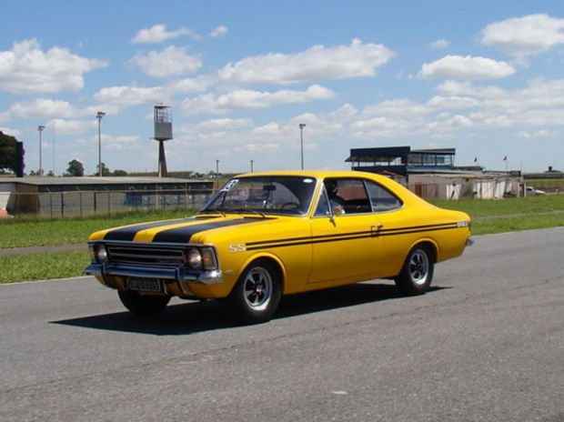

Opala SS 74
Ocupa o lugar do Chev SS americano, ícone da esportividade nacional.
Veículos utilizados em corridas nas pistas tupiniquins
Ocupa o lugar do Chev SS americano, ícone da esportividade nacional.
O "Mustang brasileiro" com potente motor V8, muito usado em corridas.
Apelido da versão de 1970 do Fusca.
Esportivo com carroceria de fibra sobre mecânica Volkswagen confiável.
Design de Ghia e carroceria feita por Karmann.

Um dos carros V8 de série mais fortes e luxuosos produzidos no Brasil.
Primeiro esportivo brasileiro de fibra.
Versão nacional do Alpine A108 francês.

Versão esportiva com motor 1.6 mais potente, ótimo nas pistas.
Apelidado de "Mustang brasileiro" menor.
Série especial de 1976 para homologação de corrida no Brasil.

Famoso no Brasil pelo motor "Étoile", que fervia fácil.